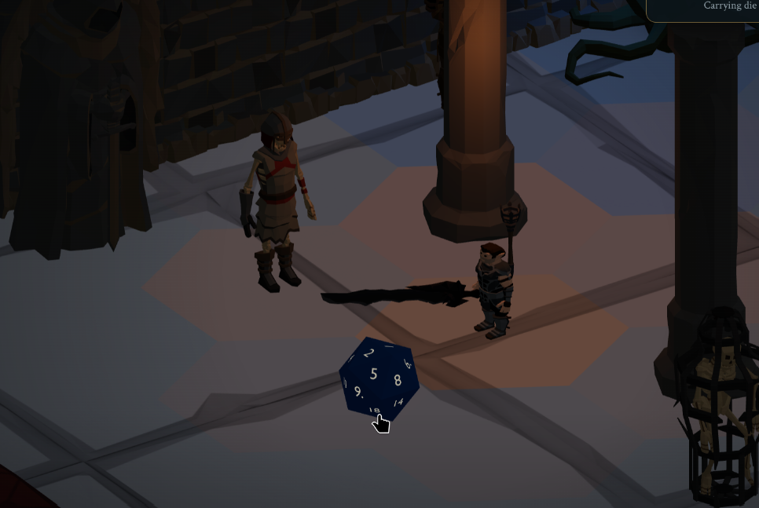

Where Everything Meets
Rules meet stories. Economies meet human behaviour. Tools meet the people who use them. Few things ask this many disciplines to become one experience — which is why I keep having the same thought: I have a place to put everything.

The Cliff Notes
The long version keeps the dead ends. For everyone reading between meetings, here is the point.
- The human thesisGames are where unlike kinds of creativity become one thing. The interesting work happens where rules, art, story, commerce, tools, communities, and human behaviour change one another.
- The projectI built a co-op D&D game across a rules toolkit, a server, and a 3D browser client. It began as a Discord bot and eventually produced the halfling above.
- The refrain“I have a place to put everything.” I thought it three times. Each time it was true at one scale and wrong at the next.
- The design payoffDice roll on the dungeon floor. When you help a teammate, they roll your die. The machinery matters because it turns a modifier into a shared social moment.
- The world payoffActions become facts with witnesses. The camera can know everything while each character knows only what they saw, letting player behaviour become story.
- The conclusionBuilding alone clarified what I value, but games contain too many disciplines for solitude to be the point. The part I miss is solving creative problems across those boundaries and shipping the answer together.
↓ the whole thing, with the failures left in
Games are where everything meets
A marketplace reveals and shapes what people value. An economy turns that value into choices. Rules create pressure; social systems turn pressure into alliances, habits, jokes, and betrayal. Story gives those choices meaning. Tools decide which ideas creators can afford to try. Architecture determines how safely all of it can change. Then human beings arrive and use the whole thing in ways nobody predicted.
Few products put marketplaces, social systems, economies, rules, storytelling, tools, architecture, and human behaviour in one place. Fewer still make every boundary part of the experience. A clean rule can produce a dull choice. A useful tool can change the kinds of stories a team tells. A tiny social gesture can matter more than a system built to look important.
That convergence is the fascination for me. Architecture is part of it, and it is the part I naturally reach for, but architecture is not the subject. The subject is what becomes possible when all the parts can meet.
I spent more than ten years of my career working on game teams, then about five years outside games. When the itch returned, there was no grand plan attached. I just knew I had to build something and find out where the feeling led.
“This is what you wanted to add?”
The first nudge came from a Mastodon bot that ran adventures through polls. People voted on what the party did next, and the story moved. I loved it. I contributed exactly one pull request.
It was not a new adventure or even a feature. I found a tangled piece of logic and simplified it until it read clearly. The maintainer’s response was, more or less: this is what you wanted to add?
He was not being unkind. He was surprised that, given a whole game-shaped thing to touch, I had reached for the place where the parts were hard to reason about.
I have thought about that comment ever since. Somebody had named the way I make things before I had.
I am a creative. It is just architectural creativity, and not so much on the visual side.
That does not make architecture a lesser form of creativity. It does make it a form that needs something else to meet. A beautifully arranged system with nobody making, playing, or caring on top of it is just a beautifully arranged system.
Forms meant character creation
I started building a D&D bot for Discord along the same lines: polls to steer the adventure, text coming back.
Then I learned Discord bots could have forms. The project changed immediately, because forms meant character creation. Not voting on what the party did next. Sitting down and making someone.
That is a small interface capability with a large human consequence. A form created ownership. Everything after it had a person on the other end who had made someone and cared what happened to them.
Around then I built an ASCII scene of a room and was thrilled with that too. The honest scale was a character sheet inside a chat window and a room made of text characters.
Then two more things landed close together. Discord Activities could put a real web application inside a voice channel, with everyone in it. Three.js could put 3D in a browser. The paragraph could become a place the party shared.
I did not yet have a place for everything. I had something more useful: a reason all those things might need to meet.
The question that was too small
Once the room could be more than text, the project needed rules underneath it. I began with what looked like a contained question: what is a condition? Poisoned, blessed, enraged. How should the engine represent that?
The question was too small. A condition, a class feature, a weapon enchantment, a spell effect, and difficult terrain all have the same shape: each hooks into what is happening and changes it. The little bus I had built to pass combat modifiers around was the place all of them could meet.
The note from that week puts it more bluntly than I would have: “we realized our event bus isn’t just for conditions — it’s the nervous system of the entire game.”
The creative consequence mattered more than the diagram. A designer could define dawn restoring a paladin’s power, a story milestone refilling a resource, or a spell topping up an ally without asking for a new kind of engine each time.
I learned that by first doing the opposite. I built a concentration manager, realised it belonged to one game’s rules, and removed it. I put ProcessShortRest() on a generic resource pool and called it a red flag in my own notes. The engine should not know what a short rest is. It needs to know something happened and give every relevant part a chance to care.
Rage was supposed to be a hundred lines
Barbarian rage: you get angry, you hit harder, you take less damage. I estimated about a hundred lines.
In 5e, rage ends if you go a round without attacking or being hit. Rage listens for the end of your turn; when it is over, it has to stop listening. That is where the engine stopped dead. The event system held a lock while handing out the event, and un-listening needed the same lock. The feature could not switch itself off. A barbarian could not stop being angry.
The fix is the first thing in the engine I would still defend today. A listener never reaches into the machinery mid-flight. It returns what it wants to happen, and the machinery acts once the event finishes. Events complete, then the world changes.
That was the useful failure. The rest was mine: untyped strings everywhere, plus infrastructure I had already written, ignored, and rebuilt worse. I threw the pull request away and filed five issues from the wreckage.
Two lines I wrote that night and still stand by: “Sometimes the best code is the code you don’t ship.” And “Better to have no combat than broken combat.”
Over the next thirty-six hours, rage became one self-contained object. It listens for three things, tracks whether you swung and whether you were hit, and removes itself when neither happened. Nothing polls it. No combat code asks “is this character raging?”
That is an architectural result, but the payoff belongs to everyone making content: a new effect can be attached to a player, monster, or trap and manage itself. A new idea no longer requires a new branch through combat.
The server never learns what rage is
Saving the game exposed a different boundary. A character may have a rage with two uses left and a bless that expires in four rounds. If the server has to understand both, then the rules live in two codebases and every change becomes a negotiation between them.
Instead, every piece describes itself. A feature knows how to write itself down and read itself back. The server stores a blob it cannot interpret. On the way in, the engine reads one field — a name like dnd5e:feature:rage — and hands the whole thing to whoever owns that name.
The game server never learns what rage is.
It arrived as one line buried in a list on the least confident day of that week, when I wrote four documents and decided nothing in any of them: “ToJSON for storage, ToData for internals.”
Fourteen months later it is load-bearing across the codebase. The idea I was excited about that week is the one that did not ship.
A good boundary is not interesting because it is clean. It is interesting because two parts of a team can change what they own without forcing the other part to impersonate them.
“I have a place to put everything”
The feeling first arrived when the event bus existed:
I have a place to put all of the things I need.
I did not, quite. I had a place for conditions, features, and interruptions. That was a great deal, but it was not everything. Still, this was the first time the shape of the project felt bigger than the feature list.
The error is revealing. I was measuring “everything” in rules. Games keep moving the boundary outward.
A +2 shows up in a combat log
A barbarian rages. The condition attaches itself to the damage calculation. A +2 appears, itemised, in the breakdown a player reads: not a number from somewhere, but a number with its reasons attached.
It was the first visible proof that any of the invisible work reached a human being. The architecture, rule, interface, and explanation had finally met on one line.
Then I went and did something else for four months.
No design documents. No architecture decisions. Ten merged pull requests across three repositories in February.
I came back needing an audit
The gap was not a crisis of faith in the game. My work had turned toward building agent systems, and the problems were worth following. This project sat nearly still while I did.
Those months changed the tools and the way I worked across a rules engine, server, and 3D client. They did not spare me from understanding any of them. When I returned, I no longer trusted my memory of the codebase I had written, so I re-derived it by searching the source.
Two packages on the combat hot path did not appear anywhere in my documentation. Something I would have said confidently about my own architecture came back marked partially true — needs correction.
That is worth saying plainly. Tools can increase reach. They do not make judgment, context, or reorientation optional.
I found out I could just buy the halfling
The thing holding me up was never the engine.
I cannot model a character. I cannot texture a crypt or animate a greatclub swing. That is a real wall for one person, and no amount of architecture gets you over it. For a long time the honest answer to “when will this look like a game?” was: it will not.
Then I found Synty asset packs: professional low-poly art, buyable in bulk. A marketplace closed a creative gap I could not close by pretending to be another discipline. At the same time, the way I was working had changed.
In the month after the art landed, more work shipped across the three repositories than in any previous month — against a trough of ten merged pull requests five months earlier.
Two things changed in that window, not one. The art arrived and the way I was working changed. I am not going to claim the assets alone did that.
The meeting worked because of what came before it. The engine did not have to change to accept the halfling. He could walk, swing, open a door, and be seen by a monster that reasoned about him, because none of that had ever depended on what he looked like.
But the reverse was also true: the engine finally mattered differently because someone else’s art gave players a person to see. Neither half was the game by itself.

The die belongs to someone
Throwing dice is a large part of what tabletop play actually is. It is the moment everyone leans in. So this game rolls them as a table does: on the dungeon floor, in front of everyone.
They are objects. They bounce off walls and can fall off the table. When a check happens, the die is there, on the ground where somebody left it, and you click it.
The part I like best happens when you help someone. If you are buffing a teammate, they roll your die. Your bless. Your d4 in their hands, on the floor, in front of the party. Helping becomes an event in the room instead of a number quietly added to a total.
That one decision is the thesis in miniature. A rule meets a 3D object, ownership meets generosity, and a calculation becomes theatre. The technical system succeeds by getting out of the way of a human gesture.
Damage dice are coming. The camera moves with the moment — over the shoulder when it is yours, pulled back to tactical when it is the party’s, and all the way out to a tabletop view when you want the board. Dice will be customisable, because of course they will. Everybody has a set.
I am not a game designer. This is the decision I would defend hardest anyway.
The encounter was also one of those tools
The old encounter system had started to feel like an application. That sounds like praise. It is not. Each addition was harder than the last, and I was working around the module instead of with it.
I kept wishing for tools inside the encounter: one to manage the clock, one for intel — who knows what — and others to handle the record and interruptions.
Then came my favourite realisation in the project:
The encounter was also one of those tools.
It was never the top of the stack. It was a peer. Pull out the clock, intel, record, and interruptions, and what remains is not a diminished encounter. It is one that composes. Resolution is what ties the peers together.
What the old module had become, in my own words at the time: one type spread across twenty files owning combat, movement, fog of war, lock-picking, death saves and dungeon generation. “A tool does things its author never anticipated, because its pieces compose. What I had was exhaustive. You don’t build with it; you file an issue against it.”
The important distinction is creative. An exhaustive system can reproduce the requests already filed against it. A generative tool lets designers combine parts into a stealth encounter, a chase, a trap, or the idea nobody had when the API was named.
“I have a place to put everything”
With resolution driving, every verb in the game could become a small machine. An attack gathers the attack roll, gathers damage, and finishes. Fireball does not roll to hit, so its machine skips that step. Dragon breath does the same. The driver does not need to special-case either one.
Because each step boundary is plain data rather than a call stack, a machine can be paused, interrupted, sent to a player for confirmation, written to disk, picked up again, and finished. A monster answering automatically and a human being asked are the same step, answered by different things. That is what makes a reaction real.
I thought I had it all.
And I think I probably did — for a single dungeon.
Sixteen days after the decision to rebuild, the old encounter module was deleted. The new shape had places for more verbs than I could name. But a game is not only the verbs available inside one room.
But what would make the game good?
The question that broke the project open was not an engineering question.
What would make a streamer want to buy this? What would make subscribers play week after week instead of watching once? A perfectly composable dungeon crawler is still a dungeon crawler.
That question produced the living world.
When somebody acts, the result is not “success” or “failure”. It is a fact, with a list of who witnessed it. Nothing stores what the bandit camp believes. Each observer builds its present from only the facts it saw.
That one model lets several disciplines meet without pretending they are the same. Stealth becomes authorship of your own audience. A disguise blown in front of one guard is a fact with a short witness list. The rogue can see a secret door the fighter genuinely cannot. Story emerges from rules about knowledge, and the social experience emerges from characters disagreeing honestly about the same room.
For a streamer, that is the good part: the camera sees everything, and each character sees only their own feed. Dramatic irony becomes a property of the engine instead of another thing the person running the game must remember.
Because a whole Discord server writes into one shared record, failure at scale can generate what comes next. A rescue that goes badly across three parties turns the hostages nobody saved into the next antagonist roster. Nobody authored that outcome. The community’s history did.
This was the third arrival of the feeling. First the rules had somewhere to go. Then the verbs did. Now the players’ own history did too.
I have a place to put everything.
Not every finished feature. Not every discipline inside one person. A place where the work of all those disciplines could meet and keep changing one another.
Everything does not mean everything is built
I should be straight about this, because the story reads better than the repository.
On day one I mocked up a Discord command for a wandering merchant called Grimsby, in a town called Millhaven, with two days before he moved on. There is no Grimsby. There is no weather, autumn festival, or faction quietly shifting while you sleep. There is still no Artificer. One half-past-one-in-the-morning idea — character creation should not have to know what a Monk is — was never built, and the mess it was meant to remove remains in that file.
The economy and marketplace possibilities that fascinate me are possibilities, not finished features. The part of that first-day dream that did ship is the part I would not have predicted: a world that remembers per person, at the scale of a whole server.
“I have a place to put everything” is not a completion claim. It is a claim about whether the next good idea has to fight the shape already there.
A place to build together
I spent more than ten years on game teams, then about five years outside games. I continued leading and mentoring elsewhere, so I know that was not the part I had lost. What I missed was shared creative problem-solving: a designer, an artist, an engineer, and all the other disciplines changing the answer together, then shipping it together.
Building this alone made the boundaries unusually visible. It did not convince me that one person should occupy every side of them. The opposite, really. Games are where everything meets, and there are too many kinds of judgment, craft, and lived experience in that sentence for solitude to be the ultimate point.
Lately, when I imagine what comes next, I think less about owning every part and more about being back in the room where the parts meet. Not because the architecture is finished. Because architecture becomes useful when other people can bring it ideas I would never have had.
I am not going to pretend the halfling is my work. Somebody at Synty modelled him. What I built is why he can pick up a club that is obviously too big for him, have the rules agree that he may try, have the room remember that he did, and leave the skeleton in the corner unaware of it.
Three times I thought I had everything I needed, and each time I was wrong at a larger scale. I no longer expect the feeling to be accurate. What I have instead is better, and it is the honest place to end:
I might not have everything I will need. But it currently looks like I have a place to put everything we want to build.
The club is roughly one halfling long. I am very happy with it.